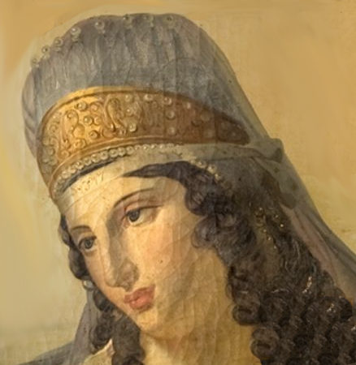

Preserving Tunisia’s heritage in 3D
A volunteer nonprofit · tanitxr.org
The founder of Carthage, between legend and archaeology

Elissa, as a later painter imagined her
Online and free.
The link to join comes by email.
A Phoenician princess from Tyre escaped a murderous brother, crossed the sea, and founded Carthage with the people who came with her and the hide of an ox. How much of her story is history, and how much is legend?
Hosted by Tanit XR with our fiscal sponsor, Florida Community Innovation